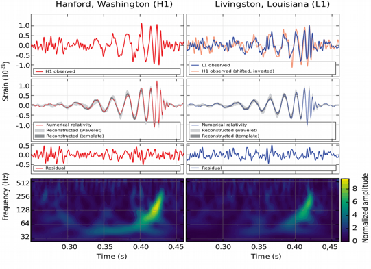

Highlights
Gravitational waves
 The breakthrough discovery of the first gravitational wave signal in September 2015 (Nobel Prize 2017) has opened a new window to the Universe. Analyses of the signal waveforms during the initial inspiral, merger and final ringdown phase provide crucial information about the properties of superheavy stellar objects.
- By Benjamin Miller

Liquid Chromatography
 Chemical analysis of samples from poluted soil, industrial
production streams, urine, or blood, to name but a few examples,
is often a daunting task due to the large number of different
compounds or low concentration of interesting molecules. Machine
learning can help.
Chemical analysis of samples from poluted soil, industrial
production streams, urine, or blood, to name but a few examples,
is often a daunting task due to the large number of different
compounds or low concentration of interesting molecules. Machine
learning can help.
- By Jim Boelrijk